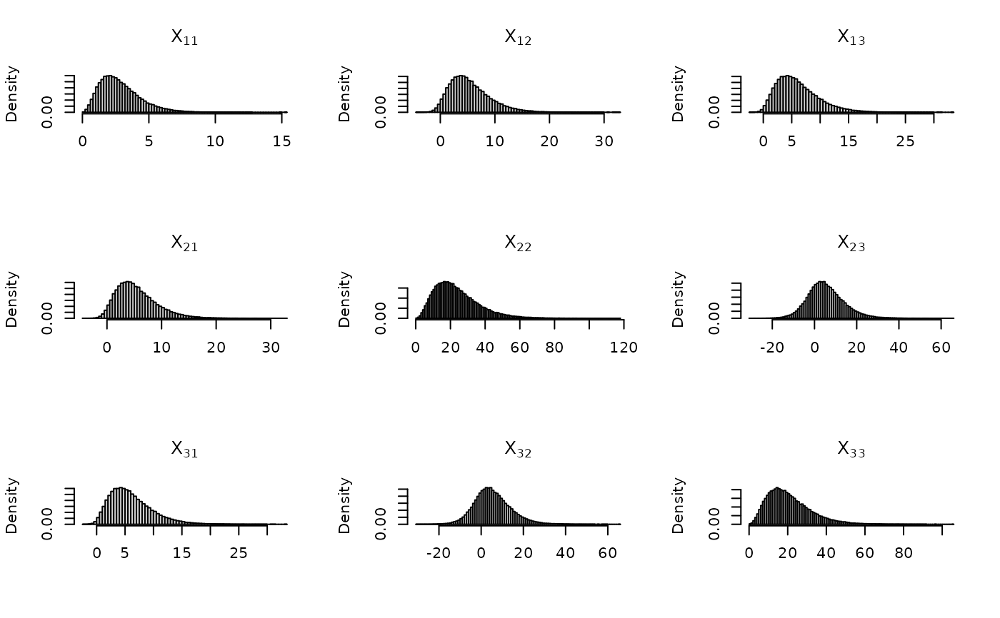
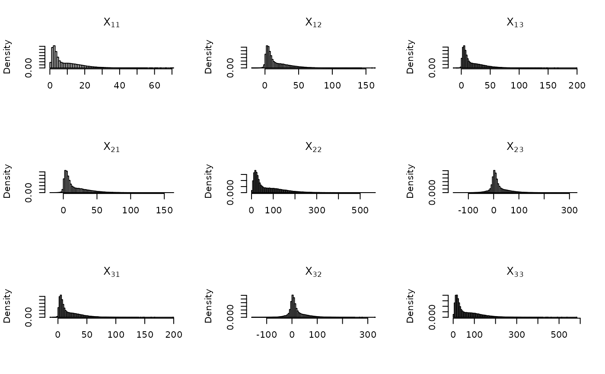
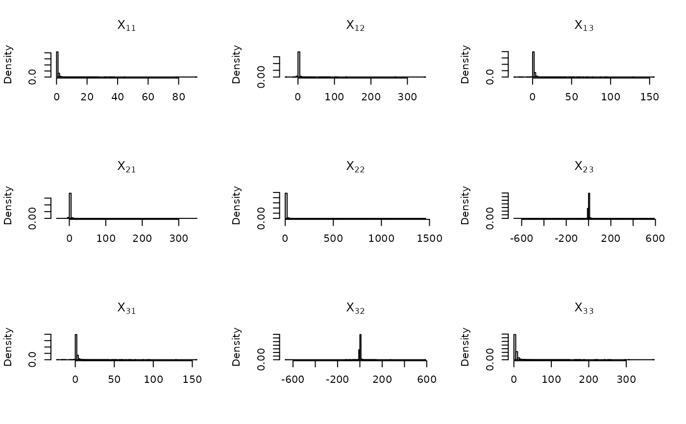
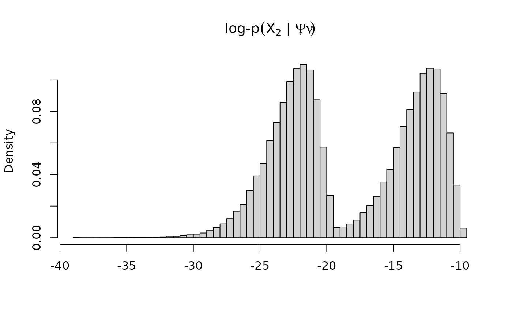

Densities and random sampling for the Wishart and Inverse-Wishart distributions.
dwish(X, Psi, nu, log = FALSE)
rwish(n, Psi, nu)
diwish(X, Psi, nu, log = FALSE)
riwish(n, Psi, nu)
dwishart(X, Psi, nu, inverse = FALSE, log = FALSE)
rwishart(n, Psi, nu, inverse = FALSE)Argument to the density function. Either a q x q matrix or a q x q x n array.
Scale parameter. Either a q x q matrix or a q x q x n array.
Degrees-of-freedom parameter. A scalar or vector of length n.
Logical; whether or not to compute the log-density.
Integer number of random samples to generate.
Logical; whether or not to use the Inverse-Wishart distribution.
A vector length n for density evaluation, or an array of size q x q x n for random sampling.
The Wishart distribution \(\boldsymbol{X} \sim \textrm{Wishart}(\boldsymbol{\Psi}, \nu)\) on a symmetric positive-definite random matrix \(\boldsymbol{X}\) of size \(q \times q\) has PDF $$ f(\boldsymbol{X} \mid \boldsymbol{\Psi}, \nu) = \frac{|\boldsymbol{X}|^{(\nu-q-1)/2}\exp\big\{-\textrm{tr}(\boldsymbol{\Psi}^{-1}\boldsymbol{X})/2\big\}}{2^{q\nu/2}|\boldsymbol{\Psi}|^{\nu/2} \Gamma_q(\frac \nu 2)}, $$ where \(\Gamma_q(\alpha)\) is the multivariate gamma function, $$ \Gamma_q(\alpha) = \pi^{q(q-1)/4} \prod_{i=1}^q \Gamma(\alpha + (1-i)/2). $$ The Inverse-Wishart distribution \(\boldsymbol{X} \sim \textrm{Inverse-Wishart}(\boldsymbol{\Psi}, \nu)\) is defined as \(\boldsymbol{X}^{-1} \sim \textrm{Wishart}(\boldsymbol{\Psi}^{-1}, \nu)\).
dwish() and diwish() are convenience wrappers for dwishart(), and similarly rwish() and riwish() are wrappers for rwishart().
# Random sampling
n <- 1e5
q <- 3
Psi1 <- crossprod(matrix(rnorm(q^2),q,q))
nu <- q + runif(1, 0, 5)
X1 <- rwish(n,Psi1,nu) # Wishart
# plot it
plot_fun <- function(X) {
q <- dim(X)[1]
par(mfrow = c(q,q))
for(ii in 1:q) {
for(jj in 1:q) {
hist(X[ii,jj,], breaks = 100, freq = FALSE,
xlab = "", main = parse(text = paste0("X[", ii, jj, "]")))
}
}
}
plot_fun(X1)

# "vectorized" scale parameeter
Psi2 <- 5 * Psi1
vPsi <- array(c(Psi1, Psi2), dim = c(q, q, n))
X2 <- rwish(n, Psi = vPsi, nu = nu)
plot_fun(X2)

# Inverse-Wishart
X3 <- riwish(n, Psi2, nu)
plot_fun(X3)

# log-density calculation for sampled values
par(mfrow = c(1,1))
hist(dwish(X2, vPsi, nu, log = TRUE),
breaks = 100, freq = FALSE, xlab = "",
main = expression("log-p"*(X[2]*" | "*list(Psi,nu))))
